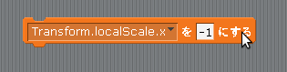

Scratch is developed by the Lifelong Kindergarten Group at the MIT Media Lab. See http://scratch.mit.edu
向きを変える
今のままではずっと右を向いたままなので Cat の向きを変えてみましょう。
Unity2Dのゲームオブジェクトを左右反転させるためには「Transform」コンポーネントをアタッチしてから「localScale.x」プロパティに値を入れます。
localScale.x に 1 を入れると右向き、-1 を入れると左向きになります。
例えば Cat の「Start」イベントか「Update」イベントの中で図1の様なスクリプトを作成すると Cat は左を向きます。
図1: 左を向くスクリプト
